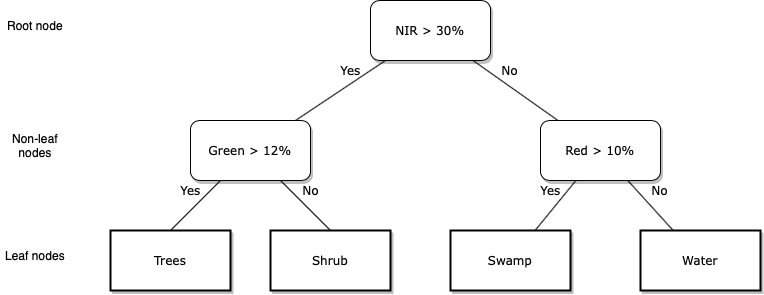
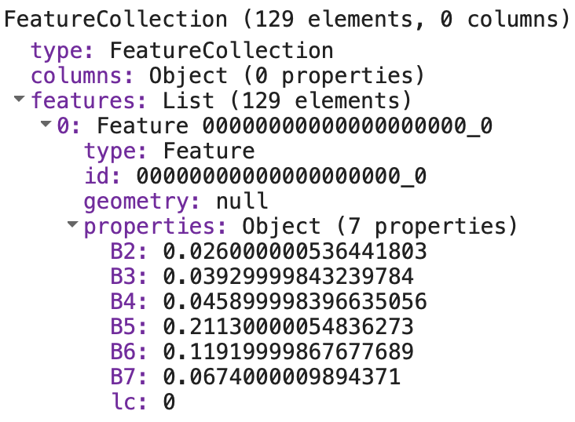
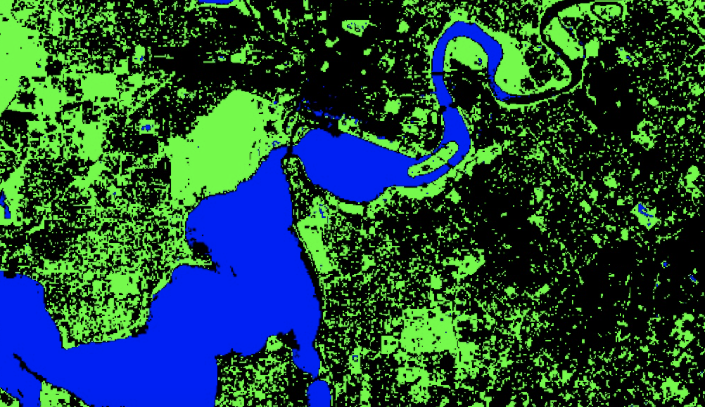
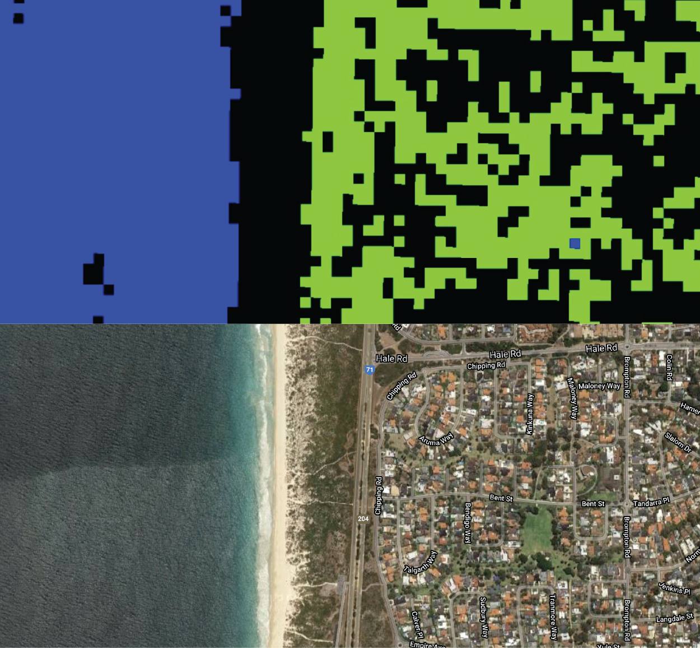
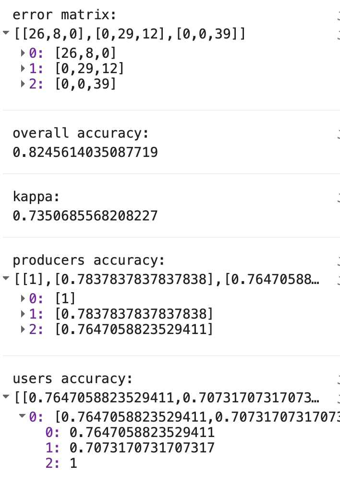

Introduction
This lab will introduce a workflow to classify Images in Google Earth Engine using supervised classification algorithms.
Image classification is the process of classifying pixels in an Image into similar classes (groups or clusters of similar pixels) or categories (a label that relates to physical or land surface characteristics).
You will use a supervised classification algorithm to assign each pixel a label based upon spectral reflectance values. Land cover mapping is a common image classification task. Different land cover types have different spectral signatures (i.e. they have different levels of reflectance in different portions of the electromagnetic spectrum); an algorithm can be trained to predict each pixel’s land cover type by learning rules that relate spectral reflectance properties to land cover types.
You have a predictor dataset \(X\) which contains \(p\) predictor variables \(X_{1}, X_{2},..., X_{p}\); in the case of land cover classification using remotely sensed data \(p\) often corresponds to wavelengths of the electromagnetic spectrum. Your goal is to train a classifier (algorithm) \(f\) which relates predictor variables \(X\) to an outcome \(Y\).
\[Y = f(X)\]
The video below presents a good overview of tools for Image classification in Google Earth Engine. It is quite long, so best watched after the lab to consolidate what you have learnt.
An overview of Image classification in Google Earth Engine.
Supervised Classification
In supervised classification, to train a classifier the target values of \(Y\) need to be known. The goal is to train a classifier, \(\hat{f}\), that predicts target labels when it is given a set of input predictor variables, \(X_{1}, X_{2},..., X_{p}\). Training a classifier involves learning rules that relate values of predictor variables, \(X_{1}, X_{2},..., X_{p}\), to the known target labels of \(Y\). For each training observation \(x_{i}\) there is a known \(y_{i}\). You train a classifier by finding rules that minimise a metric of classification error when predicting the known \(y_{i}\).
A classification tree is one of the simplest supervised classifiers to see inside and to visualise the algorithm’s rules for making predictions. A classification tree consists of a series of yes / no splits for values of \(X_{p}\), the predictor variables (e.g. spectral reflectance measured in \(p\) wavelengths). The leaves of a classification tree correspond to the target label (e.g. a land cover type). Training a decision tree classifier involves finding splits in the values of \(X_{p}\) (i.e. learning rules) that minimise the classification error that occurs when a data point with a known target label is assigned to the wrong leaf node. When using a decision tree to predict an unknown target label, you move down the tree following the yes / no splits to arrive at a leaf node. The leaf node you end up in is the predicted target label.
The final step of a supervised classification workflow is to assess the accuracy of your model. You see how well your model performs in predicting \(Y\) for data that was not used in training the model (test data). This gives you an indication of your model’s performance and how well it will generalise to cases where \(Y\) is not known.
Unsupervised Classification
In unsupervised classification, for each observation \(x_{i}\) in the training data there is no observed outcome \(y_{i}\). An unsupervised classification algorithm \(f\) assigns observations to clusters based upon them having similar values in the predictor variables \(X\). In the context of remote sensing image classification, an unsupervised classification algorithm would assign a pixel \(i\) to a class \(j\) based upon a its \(x_{i}\) spectral reflectance values. Your goal, given some training data, is to train an unsupervised classification algorithm \(\hat{f}\) that assigns pixels to classes so that the within-class (within-cluster) variability in pixel values is minimised. Unsupervised classifiers in Google Earth Engine are called clusterers; this name refers to goal of unsupervised classifiers to create clusters of similar observations. Classes (clusters) do not directly relate to ground objects, real world phenonomenon or entities, or land cover types; instead, they define clusters of similar pixels in terms of their spectral reflectance values. Often, image classes relate to interesting land surface characteristics but it is a post-processing step to formalise these relationships and assign meaningful labels to image classes.
Task
You will perform a supervised classification of a Landsat 8 Image to predict a pixel’s land cover type.
Supervised classification
- Prepare labelled training data comprising observations of Landsat 8 spectral reflectance values and a land cover type property.
- Train a supervised classifier to predict a pixel’s land cover type (water, built up, or vegetation).
- Predict each pixel’s land cover type in the Landsat 8
Image. - Assess the accuracy of the your land cover prediction using independent test data.
Setup
/*
LULC Classification
Author: Test
Date: XX-XX-XXXX
*/Data Import
// Data import
// study area
var bBox =
/* color: #d63000 */
/* displayProperties: [
{
"type": "rectangle"
}
] */
ee.Geometry.Polygon(
[[[115.23492202085255, -31.663337604046916],
[115.23492202085255, -32.220373273114554],
[116.13442763608693, -32.220373273114554],
[116.13442763608693, -31.663337604046916]]], null, false);
//Get Landsat 8 SR Image
var l8SR = ee.Image('LANDSAT/LC08/C01/T1_SR/LC08_113082_20160802').clip(bBox);
print(l8SR);
// Use these Landsat 8 bands and rescale spectral reflectance values
var bands = ['B2', 'B3', 'B4', 'B5', 'B6', 'B7'];
l8SR = l8SR.select(bands).divide(10000);
/* Define the visualization parameters. The bands option allows us to specify which bands to map. Here, we choose B4 (Red), B3 (Green), B2 (Blue) to make a RGB composite image.*/
var vizParams = {
bands: ['B4', 'B3', 'B2'],
min: 0,
max: 0.4,
};
// Centre the display and then map the Landsat 8 image
Map.centerObject(l8SR, 10);
Map.addLayer(l8SR, vizParams, 'RGB composite');
print(l8SR);Use the Inspector tab to visualise the difference in Landsat 8 spectral reflectance across different wavelengths for different land cover types.
Visualise spectral reflectance using the Inspector tab
Supervised Classification
Training (Feature) Engineering
The first task in a supervised classification workflow is to prepare the training data. This is called training or feature engineering (in machine learning predictor variables are often called features).
Classifiers in Google Earth Engine require a FeatureCollection for training where one property in the properties object is the outcome variable and the other properties are the predictors.
The FeatureCollection trainingPoints contains three Feature objects. Each Feature object has a multipoint Geometry object and a properties object containing the property lc. lc refers to the land cover type at each point’s location.
An lc value of 0 corresponds to vegetated land cover, an lc value of 1 corresponds to built up land cover, and an lc value of 2 corresponds to water.
These labelled training points were created through manual digitisation guided by visual inspection of the Google satellite basemap.
// Training engineering
// Import points labelled with land cover type property
var trainingPoints = ee.FeatureCollection("users/jmad1v07/gee-labs/training_points");
print(trainingPoints);
Map.addLayer(trainingPoints, {color:'red'}, 'training data');The date of the Google satellite basemap used to guide the creation of the training data was not known. What problem could this introduce when using this training data to train a classifier to predict the land cover type of Landsat 8 pixels?
Land cover might have changed between the date of capture of the Google satellite basemap and the date of the Landsat 8 Image you wish to classify. This means that the labelled training data may not accurately reflect the land cover type at the time the Landsat 8 Image was captured.
Explore the red points on the map that represent the location of the labelled training points. You should see clusters of points in Perth CBD and Kings Park. What problem could this clustering of training data present?
Training data observations which are close to each other in space might have spatial correlation among their data values. This spatial correlation reduces the effective number of independent training data observations. This can be problematic as non-parametric classifiers, such as CART, require large numbers of training data observations to characterise the relationships between predictor variables and outcome categories.
You now need to find the Landsat 8 spectral reflectance values that intersect with each of the point locations.
There is a convenient sampleRegions() function in Google Earth Engine that helps with feature engineering. The sampleRegions() function samples the pixels of an input Image (l8SR here) using the Geometry objects specified as the collection argument (trainingPoints here). This function extracts the values in each band of l8SR that intersect with each point’s location.
// Sample spectral reflectance at training points
var trainingData = l8SR.sampleRegions({
collection: trainingPoints,
properties: ['lc'],
scale: 30
});
print(trainingData);Inspect the FeatureCollection trainingData in the Console. You should see it contains 129 Feature objects and each Feature has a properties object containing an lc property which corresponds to a land cover type and properties B2 through to B7 which correspond to spectral reflectance measurements.

You can now use trainingData to train a classifier to predict land cover type based on Landsat 8 spectral reflectance data values.
Train
You are going to use trainingData to train a classification and regression tree (CART) model to predict a pixel’s land cover type based on its spectral reflectance values.
The first step is to create a CART object using the ee.Classifier.smileCart() constructor function. You then use the train() function to train the CART classifier. You pass your labelled training data trainingData into the train() function and it will learn the rules that best relate spectral reflectance values in your training data to the observed land cover type specified by the lc property.
// Train a CART classifier with default parameters.
var trainedCART = ee.Classifier.smileCart()
.train(trainingData, 'lc', bands);
print(trainedCART);The video below presents a short demonstration of how CART classifiers work. You can also read Chapter 8 of James et al., (2013) to understand the process of how CART classifier rules are trained via minimising an error function.
Overview of CART classifiers
Predict
Now you can use your trained CART classifier object to predict each Landsat 8 pixel’s land cover. To classify an Image in Google Earth Engine using a trained classifier use the classify() function. You pass your trained classifier into the classify() function as an argument; this function will apply the algorithm defined in your trained classifier (trainedCART here) to each pixel’s spectral reflectance values to predict land cover type.
Display your predicted land cover Image on the map. Visually inspect your map of predicted land cover. How good a job has your trained classifier trainedCART done at predicting the land cover type of the Landsat 8 pixels?
// Classify (predict land cover type) l8SR using trained CART classifier
var lcImage = l8SR
.select(bands)
.classify(trainedCART);
print(lcImage);
//Make a palette for mapping
var lulcColor = [
'00FF00', // vegetation
'000000', // built up
'0000FF', // water
];
Map.addLayer(lcImage, {palette: lulcColor, min: 0, max: 2}, 'supervised classification');
Use the Layers tab to toggle on and off the Landsat 8 RGB composite, the predicted land cover map, and the Google satellite basemaps. Zoom in on a few locations and explore the difference between the land covers captured by the Google satellite basemaps and the Landsat 8 data.
You should see that in many cases a single Landsat 8 pixel is comprised of multiple land cover types (e.g. a pixel could include trees, a grass lawn, and roofs). This is a mixed pixel problem; it is one example of how spatial data often simplifies reality. Here, a mix of land cover types with different spectral signatures will be represented by a single spectral reflectance value per-band and per-pixel or by a single land cover type label.
Visualise mixed pixels

How could you reduce the mixed pixel problem that is visible when predicting land cover over urban Perth using Landsat 8 data?
- You could use finer spatial resolution data that would be able to resolve the different land cover objects present within a single Landsat pixel.
- You could use a fuzzy classification system where a pixel can be a member of more than one land cover type.
The classifier you have just trained predicts whether a pixel is one of three land cover types (vegetation, built up, or water). In reality, there are far more than three land cover types present within the area covered by the Landsat 8 Image. An example of this is shown in the below figure where beach between City Beach and Scarborough in Perth is classified as built up land cover. Therefore, through limiting the possible land cover types we are introducing error into predicted land cover maps (i.e. there is a discrepancy between predicted land cover and reality).

How could you train a classifier that predicts whether a pixel belongs to more land cover types than vegetation, built up, or water?
Ensure that your labelled training data covers the range of land cover types within the area of interest and that you have a sufficient number of training data observations per-land cover type in order to characterise each land cover type accurately.
Accuracy Assessment
Before using your trained classifier to predict the land cover type of new pixels (i.e. pixels that you don’t already know the land cover type) you need to know how accuracte the classifier’s predictions are. You do this by assessing the classifier’s accuracy; typically this is done by comparing predictions to observations on unseen data - data that has not been used to train the model. This will give you an indication of how well your classifier will generalise and work on new data.
First, you need some test data that contains labels of observed land cover types. Then you can use your trained classifier to predict the land cover type at each of these locations. Finally, you compare the predicted versus the observed land cover types to assess the accuracy of your trained classifier.
Import the the FeatureCollection test_points into the variable testPoints. This contains labelled points with an observed land cover type property. The process of predicting the land cover type at each of these test points is similar to the feature engineering process described above. Use the sampleRegions() function to extract the spectral reflectance measures for each of these points. Then use the trained classifier trainedCART to predict the land cover type at each test point based on its spectral reflectance values.
// Accuracy Assessment
var testPoints = ee.FeatureCollection('users/jmad1v07/gee-labs/test_points');
Map.addLayer(testPoints, {color:'yellow'}, 'test points');
// Sample spectral reflectance at test points
var testData = l8SR.sampleRegions({
collection: testPoints,
properties: ['lc'],
scale: 30
});
print(testData);
// Classify the test data.
var testClassified = testData.classify(trainedCART);
print(testClassified);Using the predicted versus observed land cover types for the test data points you can generate an error matrix. This an \(n\) x \(n\) matrix where \(n\) is the number of land cover types. In Google Earth Engine error matrices, the columns (1-axis) represent the predicted data and the rows (0-axis) represent the observed test data. The diagonal of the matrix represents pixels that were correctly classified (i.e. the classifier correctly predicted the observed land cover type in the test data). This code flips (transposes) the matrix for display purposes here so observed data are in the columns and predicted data are in the rows.
You can use the errorMatrix() function in Google Earth Engine to generate an error matrix from a FeatureCollection. The first argument to the errorMatrix() function is the observed land cover type (lc here) and the second argument is the predicted land cover type (classification here).
// Get an error matrix
var errorMat = testClassified.errorMatrix('lc', 'classification');
print('error matrix: ', errorMat.array().matrixTranspose(0, 1));
The sum of the diagonal elements is the number of correctly classified pixels. The overall accuracy of the classifier can be computed as:
\[accuracy=\frac{Correctly Classified Points}{Total Number of Points}\]
This indicator of classification accuracy can be interpreted as \(x\)% of an image is correctly classified. It does not give any indication of the spatial variability in classification accuracy or if certain land cover types are classified more accurately than others.
There are helpful functions in Google Earth Engine that you can apply to error matrices to compute accuracy assessment statistics. You can apply the accuracy() function to your error matrix to compute the overall accuracy and you can apply the kappa() function to compute the kappa statistic.
print('overall accuracy: ', errorMat.accuracy());
print('kappa: ', errorMat.kappa());
print('producers accuracy: ', errorMat.producersAccuracy());
print('users accuracy:', errorMat.consumersAccuracy());Using the error matrix you can compute producer’s and user’s accuracy that give an indication of the accuracy of classification for individual land cover types.
The producer’s accuracy is computed by dividing the entry in cell (\(i\), \(i\)) of the error matrix by the sum of column \(i\). The producer’s accuracy is a measure of omission error and informs on the number of test pixels in a given land cover type that were correctly classified. Here, all of the vegetation (class 0) pixels in the test dataset were correctly classified as vegetation by trainedCART. Eight of the test data points labelled as built up were classified as vegetation; therefore, built up land cover has a producer’s accuracy of 78%.
The user’s accuracy is computed by dividing the entry in cell (\(i\), \(i\)) of the error matrix by the sum of row \(i\). The user’s accuracy is a measure of commission error (i.e. erroneously labelling a pixel a given land cover type). Of the 34 test data points that were predicted as being of vegetation land cover type, eight were observed as being built up. Thus, vegetation land cover has a user’s accuracy of 76%.
Unsupervised Classification
Training unuspervised classification algorithms involves learning rules to classify a dataset into groups (classes) without requiring a label to be known or assigned to each group. The goal when training an unsupervised classification algorithm is to find splits in the data that ensure observations within each group are similar.
A common unsupervised classification algorithm is \(K\)-means clustering and the only input you need to provide to the classifier is the number of classes that you wish to cluster your dataset into.
We will demonstrate how to use unsupervised classification to cluster the Landsat 8 Image assigning all pixels to groups based on similar spectral reflectance values.
To train the the \(K\)-means clustering algorithm, we will generate a sample of pixel spectral reflectance values from the Landsat 8 Image. Here, we will generate a sample of 1000 points within the Landsat 8 scene.
// Unsupervised classification
// Make the training dataset.
var trainingKMeans = l8SR.sample({
region: bBox,
scale: 30,
numPixels: 1000,
seed: 123
});Next, we will train a \(K\)-means clusterer with five classes and then use trained algorithm to classify the Landsat 8 Image pixels into one of the five classes.
// Instantiate the clusterer and train it.
var clusterer = ee.Clusterer.wekaKMeans(5).train(trainingKMeans);
// Cluster the input using the trained clusterer.
var clusteredL8SR = l8SR.cluster(clusterer);Finally, we can display the result on the map by assigning a colour to each class.
// Display the clusters with random colors.
Map.addLayer(clusteredL8SR.randomVisualizer(), {}, 'clusters');Compare the classified maps generated using supervised and unsupervised classifiers. Has the unsupervised classifer split pixels into classes that correspond to different land cover types?
What is an advantage offered by unsupervised classification algorithms?
They are a tool that we can use to extract and visualise patterns within large and complex datasets. They can also be used for data reduction exercises to reduce the size of the dataset.
What are some limits of using unsupervised classification algorithms for land cover mapping?
The clusters learnt by the algorithm might not relate to actual land cover classes. In some cases it can be unclear how many clusters to split the dataset up into.